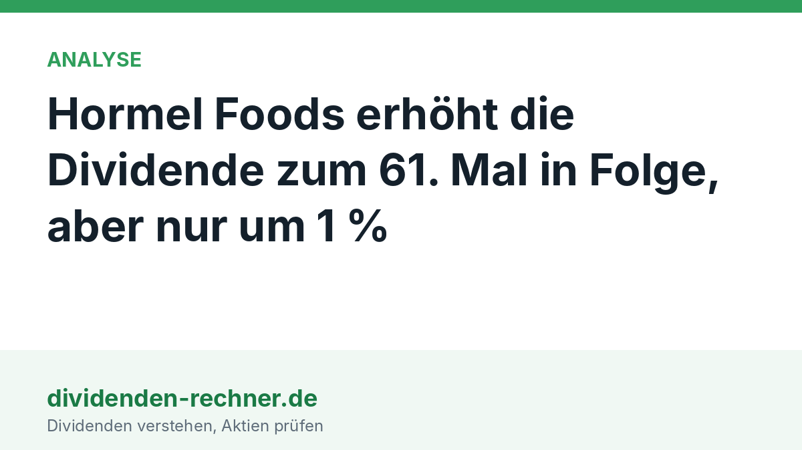

Analyse

Hormel Foods erhöht die Dividende zum 61. Mal in Folge, aber nur um 1 %
$HRL
Der Dividendenkönig aus Minnesota zahlt künftig 0,295 Dollar je Quartal. Die Erhöhung ist klein, die Rendite von 5 % hoch. Wie gut die Dividende gedeckt ist und wo das Wachstum herkommen soll, bevor am Donnerstag die Zahlen kommen.

Kurz gesagt
Die Erhöhung: 1 % auf 0,295 $ je Quartal, 1,18 $ im Jahr. Es ist die 61. Erhöhung in Folge, Hormel zahlt seit 1928 ununterbrochen Dividende. Die Rendite: 5,0 % im Hub, dazu eine Dividende, die 82 % des freien Cashflows kostet. Das Problem: Der Gewinn ist im Hub um 41 % gefallen, der Umsatz wächst kaum, und die Dividende wächst fast nur noch symbolisch. Der Termin: Am Donnerstag, 3. Dezember, legt Hormel die Zahlen zum vierten Quartal vor.
Mit einem Prozent lässt sich keine Begeisterung wecken, aber es hält die Serie am Leben. Hormel Foods hat am Montagabend angekündigt, die Quartalsdividende von rund 0,292 auf 0,295 $ anzuheben, und damit zum 61. Mal in Folge die Dividende erhöht. Nur wenige Unternehmen an der Börse können das von sich sagen, der Konzern aus Austin in Minnesota gehört zu den US-Dividendenaristokraten und mit mehr als 50 Jahren in Folge zu den Dividendenkönigen. Für Anleger stellt sich trotzdem eine unbequeme Frage: Wie lange trägt das Geschäft die Serie, wenn der Gewinn schrumpft?
Die Dividende: klein erhöht, hoch verzinst
Was der Konzern ankündigt
Die neue Quartalsdividende von 0,295 $ entspricht 1,18 $ im Jahr. Wer die Aktie bis zum 11. Januar 2027 hält, erhält sie am 16. Februar 2027. Es ist die 394. Quartalszahlung in Folge. Hormel schüttet seit dem Börsengang 1928 ohne Unterbrechung eine Dividende aus.
Die Rendite liegt im Hub bei 5,0 %, bei einem Kurs von 21,50 €. Im Fünfjahresdurchschnitt wuchs die Dividende um 4,5 % pro Jahr, die jüngste Erhöhung von 1 % liegt deutlich darunter. Das passt zu einem Konzern, der die Serie bewahren will und dafür den Spielraum nicht ausreizt.
Wie gut sie gedeckt ist
Der Hub zeigt zwei Gesichter. Gemessen am Gewinn nach Steuern liegt die Ausschüttung bei 187 %, weil der Gewinn im Geschäftsjahr 2025 um 41 % gefallen ist, vermutlich auch wegen Wertberichtigungen. Gemessen am freien Cashflow sind es 82 %. Die Prognose des Unternehmens für das laufende Geschäftsjahr nennt einen bereinigten Gewinn von 1,45 bis 1,51 $ je Aktie. Gegen diese Zahl gerechnet, nimmt die Dividende von 1,18 $ rund 78 bis 81 % in Anspruch. Die Dividende ist damit gedeckt, doch es bleibt wenig Spielraum für Rückschläge oder große Erhöhungen.
Wo das Geschäft steht
Ein Konzern im Umbau
Das dritte Quartal zeigte, wie der Umbau aussieht. Der bereinigte Gewinn je Aktie stieg um 6 % auf 0,37 $, der operative Cashflow um 54 % auf 241 Mio. $, während der Umsatz aus eigener Kraft um 2 % sank. Im Handel mit Endkunden gingen die Mengen stark zurück, etwa die Hälfte davon durch gewollte Ausstiege: Hormel verkauft keine ganzen Truthähne mehr, keine Nüsse für Handelsmarken und weniger Lohnfertigung. Das Geschäft mit Großküchen und Gastronomie wuchs das zwölfte Quartal in Folge, mit höheren Gewinnen als Umsätzen. Die internationale Sparte litt unter dem Verkauf des Brasiliengeschäfts mit Verlust und unter einer Wertberichtigung auf eine Beteiligung in Indonesien.
Wo das Wachstum herkommen soll
Wachsen sollen die Marken, die bei Verbrauchern ankommen: Planters, Applegate und Truthahn-Hackfleisch von Jennie-O sowie Fertiggerichte der Marke Hormel Entrees legten im Konsum zu. Der Konzern hat zuletzt den Geflügelverarbeiter Brakebush Brothers übernommen. Der Umsatz insgesamt soll im Geschäftsjahr 2026 mit 12,1 bis 12,2 Mrd. $ um ein bis zwei Prozent wachsen. Das ist wenig, aber es genügt, wenn die Marge steigt: Die operative Marge im dritten Quartal lag bei 9 %, 0,6 Punkte höher als im Vorjahr.
Die Risiken
Der Truthahn macht dem Konzern zu schaffen. Höhere Temperaturen, schwächere Futterverwertung und Stromausfälle durch Unwetter verteuerten die Lieferkette, dazu kommen hohe Kosten für Fracht und Kraftstoff, teures Rindfleisch und Getreide. Billigeres Schweinefleisch hilft. Der Verbraucher bleibt vorsichtig, eine Besserung erwartet das Management nicht. Zugleich hat Hormel einen Führungswechsel vor sich: John Ghingo wird neuer Chef, bis dahin führt Jeff Ettinger das Unternehmen kommissarisch.
Hormel im Vergleich
Die Tabelle stellt Hormel anderen Nahrungsmittelkonzernen aus dem Hub gegenüber, die für Dividendenanleger interessant sind.
| Unternehmen | Rendite | Dividendenwachstum 5 Jahre p. a. | Dividende in % des freien Cashflows | Operative Marge |
|---|---|---|---|---|
| 5,0 % | 4,5 % | 82 % | 5,9 % | |
| 6,6 % | 3,9 % | 85 % | 4,8 % | |
| 3,4 % | 4,1 % | 29 % | 4,0 % | |
| 6,0 % | 0,0 % | 54 % | -18,7 % | |
| 3,1 % | 2,7 % | 42 % | 1,9 % |
Hormel hat die höchste operative Marge und das beste Dividendenwachstum der fünf, zahlt aber mit 82 % des freien Cashflows mehr aus als Kraft Heinz, Tyson und Smucker. Eine höhere Rendite haben nur General Mills und Kraft Heinz, bei Kraft Heinz bei einem Betriebsverlust. Auch der Hormel-Kurs gibt eine Antwort: Die Aktie notiert mit dem 37-Fachen des Gewinns, der Markt bezahlt also Beständigkeit und erwartet die Erholung.
Was am Donnerstag zählt
Am 3. Dezember legt Hormel vor Börsenbeginn die Zahlen zum vierten Quartal und zum Geschäftsjahr vor. Das Unternehmen hatte für das Quartal einen bereinigten Gewinn von rund 0,37 $ je Aktie in Aussicht gestellt. Das Weihnachtsgeschäft mit Schinken, Truthahn und Nüssen prägt vermutlich das erste Quartal des neuen Geschäftsjahres. Entscheidend wird die Prognose für 2027: Zeigt sie ein Wachstum des Gewinns, wirkt die Dividendenserie sicher. Bleibt sie flach, dürfte die Frage nach dem Spielraum lauter werden.
Das ist keine Anlageberatung.
Quellen
Bei Google als bevorzugte Quelle hinzufügen
Hinweis: Dieser Text dient der allgemeinen Information und ist weder Anlage-, Steuer- noch Rechtsberatung. Kapitalanlagen sind mit Risiken verbunden, bis hin zum Totalverlust.